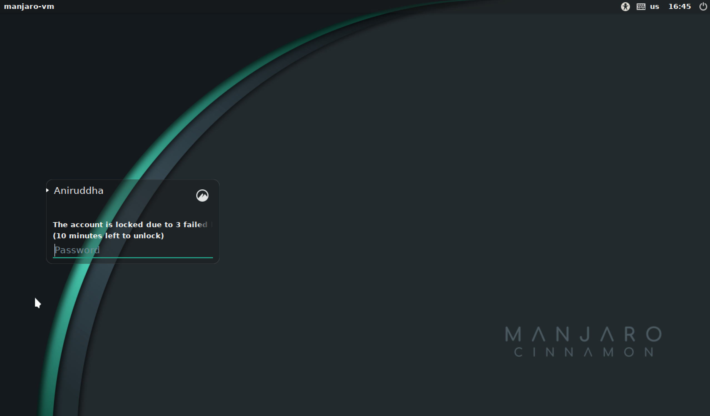

Bootloader Deep Dive
Posted on Sat 03 December 2022 in Programming
The Basics
The most basic boot process is BIOS on a standard i386/x86-64 device. The BIOS first detects the CPU/RAM, then initializes the remainder of the hardware, and then begins the boot sequence. The boot sequence basically consists of finding a bootable device, loading the boot program in that bootable device into the processor cache and letting the processor do it's thing.
How is a bootable device found? A device is considered bootable if it has the
magic bytes 0x55 and 0xaa at offsets 511 and 512 from the start. This block
is called the boot block or master boot record (MBR), and this is what
kicks off the boot process.
The MBR looks something like this:
[sensei@manjaro-vm temp]$ sudo dd if=/dev/sda of=mbr.bin bs=512 count=1
1+0 records in
1+0 records out
512 bytes copied, 0.00493179 s, 104 kB/s
[sensei@manjaro-vm temp]$ hexdump mbr.bin
0000000 63eb 0090 0000 0000 0000 0000 0000 0000
0000010 0000 0000 0000 0000 0000 0000 0000 0000
*
0000050 0000 0000 0000 0000 0000 8000 0001 0000
0000060 0000 0000 faff 9090 c2f6 7480 f605 70c2
...
...
00001c0 0021 fe83 ffff 0800 0000 f026 01df 0000
00001d0 0000 0000 0000 0000 0000 0000 0000 0000
*
00001f0 0000 0000 0000 0000 0000 0000 0000 aa55
dd copies the first 512 bytes of my disk to a binary called mbr.bin, and
we hexdump it's contents. Note the 0x55 and 0xaa magic bytes right at the
end (the system is little endian, so it reads as aa55). These 512 bytes tell
the system to load in GRUB, which then begins the boot process.
GRUB
The GRand Unified Bootloader is the default bootloader on Linux systems. What
GRUB does is create a basic runtime, initializes the ramdisk and finally loads
the kernel in. GRUB is launched by those 512 bytes that we saw above. The
actual GRUB files are stored in /boot/grub, and they look like this:
/boot/grub
├── fonts
│ └── unicode.pf2
├── grub.cfg
├── grubenv
├── i386-pc
│ ├── acpi.mod
│ ├── adler32.mod
│ │ ...
│ │ ...
│ └── zstd.mod
├── locale
│ ├── ast.mo
│ ├── ca.mo
│ │ ...
│ │ ...
│ └── zh_TW.mo
└── themes
└── starfield
├── blob_w.png
│ ...
│ ...
└── theme.txt
What GRUB does is essentially create a 'mini 32-bit linux OS', with debug
environments, a shell, and a lot of creature comforts, but beyond all that, it
creates the RAMFS and loads the kernel and points it to the RAMFS. This can be
seen in the grub.cfg file:
menuentry 'Manjaro Linux' --class manjaro --class gnu-linux --class gnu --class os $menuentry_id_option 'gnulinux-simple-ffd2d1d7-a3e5-4e24-816d-d83f13c56708' {
savedefault
load_video
...
...
linux /boot/vmlinuz-5.15-x86_64 root=UUID=ffd2d1d7-a3e5-4e24-816d-d83f13c56708 rw quiet udev.log_priority=3
initrd /boot/intel-ucode.img /boot/initramfs-5.15-x86_64.img
}
Note the last two lines: here we're specifying the actual linux kernel image
using the linux command, and the files that initialize the RAMFS using initrd.
(The intel-ucode.img is a bunch of microcode patches that the OS loads in to
workaround hardware-level bugs, think heartbleed, spectre etc. It's super
important to load this in before anything else, so that the boot process may
not be compromised and so on.)
What's a RAMFS
A RAM file system (or RAM disk) is, quite simply, a file system in memory! When the system needs to boot, the files for the system may not simply be on the HDD/SSD: they can be somewhere on the network (PXE boot), on a removable media (USB,CDROM) or on an encrypted drive! (BootLocker equivalents on Linux). For all this, we need a temporary file system that the kernel can run off of to load the OS into actual memory.
Another reason for a RAMFS is that the Linux kernel is neither monolithic, nor
a microkernel: it's somewhere in between in the sense that you can load modules
into the kernel while it's running. To do the stuff that we've described above,
(Boot off of the network, decrypt an encrypted drive, etc), the relevant kernel
modules will need to be loaded into the kernel first. These generally reside in
the initramfs image, and are loaded into memory by the kernel. initramfs is
generally a cpio compressed image, which is decompressed when it's loaded in
(something that GRUB does), and this is generated using the mkinitcpio command,
after specifying the default modules and hooks (for more information, check
out This great resource
which boots a Linux Kernel from scratch in QEMU)
From Kernel to Login Screen
Once the Kernel has finally loaded all the modules from the RAMFS and entrenched
itself in memory, it calls /init in the RAMFS to finally load the disk and
all other modules from disk.
It's all downhill from here: once all modules have been loaded, systemd (or
Your favourite Init Daemon) is called, which starts
as PID 1 and spawns all relevant processes on the system. systemd will then
start LightDM (On Manjaro, you might have a different Desktop Manager), which
displays your login prompt, and you can now finally login!

Unless, of course, you've locked yourself out with too many failed password attempts
Is this process standard across systems?
Nope. Atleast, not when you change architectures. Or go to UEFI. Ah, let's just say this is very specific.
I bumped into this whole process as I wanted to do some kernel hacking on my faithful Raspberry Pi. I regret to inform all Pi hackers that the bootloader process for the Pi is completely different, and much easier, and all you have to do is place your kernel image with the appropriate name in the '/boot' directory and the Pi will boot from it.
TL;DR the Pi has a two (three?) stage bootloader, which curiously completely
runs on the GPU. The only time the CPU is actually used is when the kernel image
is loaded into memory, and the actual init process starts. The bootloaders are
.elf files, and are apparently proprietrary. I'll give decompiling them a
shot if I have free time, but I think someone would already have tried that out.
On a side note, embedded systems with limited memory and a fairly fixed device layout generally boot without a RAMFS, as there's simply no need to hotload a bunch of modules into the linux kernel, when you know exactly what modules you'll need and what the hardware arrangement (where you're going to boot from) is.
Happy Hacking!